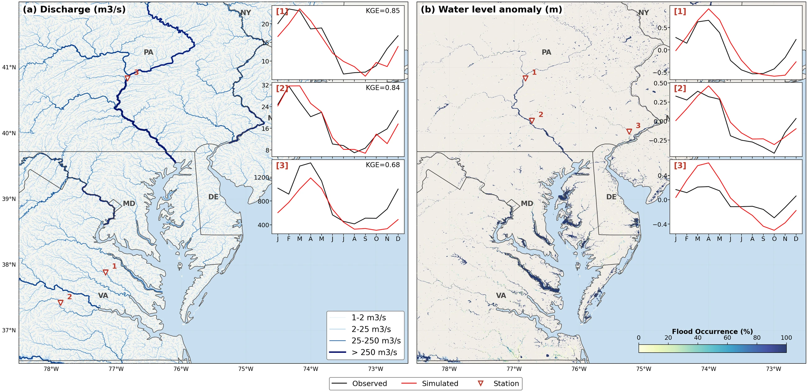
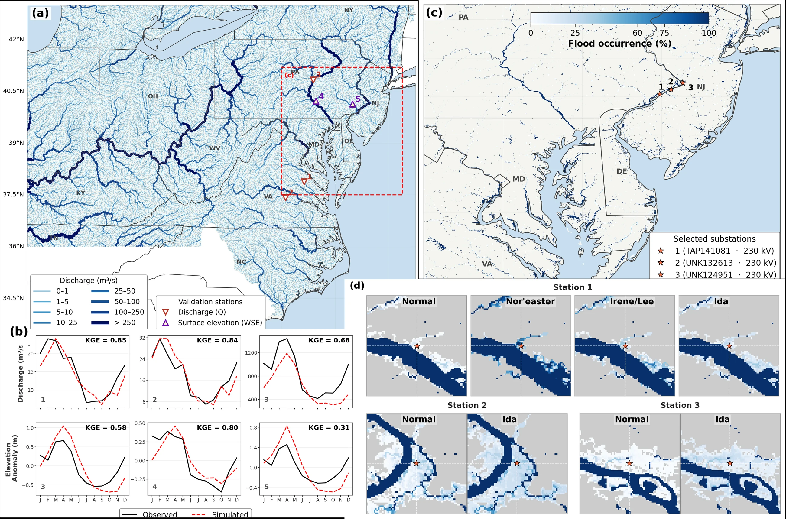

Mid-Atlantic Hydrodynamics
River-system modeling, discharge and water-level evaluation, and storm-related flood assessment across the Mid-Atlantic region.
River discharge and water-level validation

Hydrodynamic simulations were compared with observations at selected Mid-Atlantic river locations to assess how well the model represents variations in discharge and water levels. The mapped river network and accompanying time-series panels show spatial coverage and location-specific agreement between modeled and observed behavior. Kling–Gupta efficiency values shown in the discharge panels provide a quantitative check of model performance—an essential step before interpreting flood and water-resources simulations.
Storm-related discharge and flood occurrence

This multi-panel assessment brings together modeled river flow, mapped flood occurrence, and station-level comparisons for storm-related conditions in the Mid-Atlantic. It includes event comparisons associated with Irene/Lee and Ida, rather than representing a single storm throughout. Together, the figures demonstrate how spatial hydrodynamic outputs and observation-based checks can be used to investigate flood patterns and interpret model behavior during high-flow conditions.